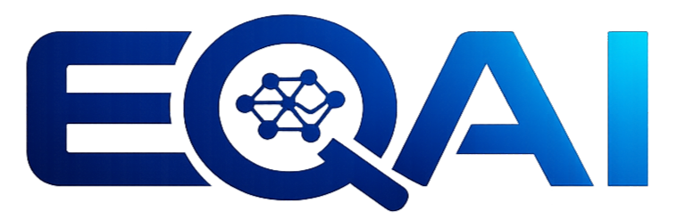
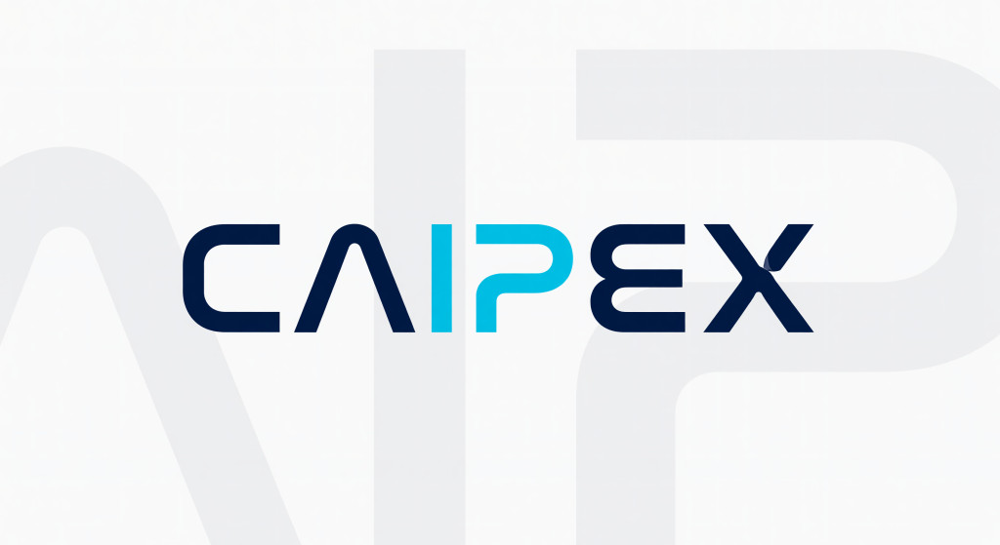
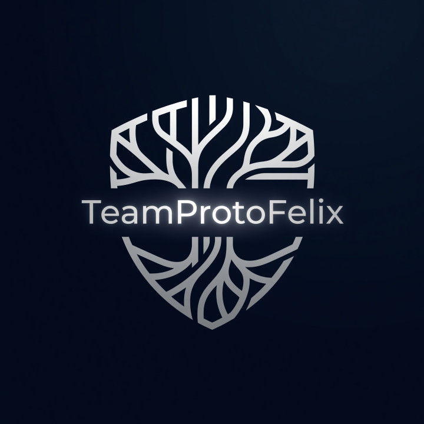

STEP 01
목적 선택 Choose a goal 目的を選ぶ
일일 브리핑, 사례 관리, 진단 지원, 실험·컨테스트, 오픈 모델 중 오늘 필요한 일을 고릅니다. Pick daily briefing, case management, diagnosis support, lab/contest, or open models. 日々のブリーフィング、事例管理、診断支援、実験・コンテスト、オープンモデルから今日必要なものを選びます。

특허·상표·디자인 심사품질 진단을 위한
근거 기반 Agentic AI 센터 —
검색하고, 검증하고, 인용하며, 확신이 없으면 자제합니다.
An evidence-grounded Agentic AI center for examination quality —
retrieve, verify, cite, and abstain when unsure.
特許・商標・意匠の審査品質診断のための
根拠に基づくAgentic AIセンター —
検索し、検証し、引用し、確信がなければ控えます。
목적에 맞는 서비스를 선택하세요. 카드 한 장으로 설명·대상·상태를 확인할 수 있습니다. Pick a service by goal. Each card shows description, audience, and status. 目的に合うサービスを選んでください。各カードで説明・対象・状態を確認できます。
검색 결과가 없습니다. No matching services. 検索結果がありません。
처음 방문이라면 3단계로 시작하세요. 역할에 맞는 추천 경로도 준비했습니다. New here? Follow three steps. Role-based paths are ready below. 初めての方は3ステップで始めましょう。役割別のおすすめ経路も用意しました。
일일 브리핑, 사례 관리, 진단 지원, 실험·컨테스트, 오픈 모델 중 오늘 필요한 일을 고릅니다. Pick daily briefing, case management, diagnosis support, lab/contest, or open models. 日々のブリーフィング、事例管理、診断支援、実験・コンテスト、オープンモデルから今日必要なものを選びます。
대상·상태 배지·한 줄 설명을 확인한 뒤 「바로가기」로 이동합니다. 외부 서비스는 새 탭에서 열립니다. Review audience, status badge, and summary, then open the link. External apps open in a new tab. 対象・状態バッジ・概要を確認して「開く」へ移動します。外部サービスは新しいタブで開きます。
진단·검색·리뷰 결과를 업무에 반영하고, 필요 시 다른 서비스와 교차 확인합니다. Apply diagnosis, search, and review results—and cross-check with other tools when needed. 診断・検索・レビューの結果を業務に反映し、必要に応じて他のサービスと照合します。
오늘의 심사품질 → 진단관 지원 AI → 청구범위 리뷰 순으로 업무 루프를 구성하세요. Start with Daily Quality → Diagnosis AI → Claims Review. 「今日の審査品質」→「診断官支援AI」→「特許請求の範囲レビュー」の順に業務ループを構成しましょう。
진단관 지원 AI 열기 → Open Diagnosis AI → 診断官支援AIを開く →AI 컨테스트와 오픈 모델로 실험하고, 사례 관리 시스템으로 인사이트를 축적하세요. Explore the AI Contest and Open Model, then capture insights in Case Management. AIコンテストとオープンモデルで実験し、事例管理システムで知見を蓄積しましょう。
AI 컨테스트 열기 → Open AI Contest → AIコンテストを開く →「오늘의 심사품질」로 센터 분위기를 파악한 뒤, 관심 서비스 카드를 탐색해 보세요. Start with Daily Examination Quality, then browse service cards that match your interest. 「今日の審査品質」でセンターの雰囲気をつかみ、関心のあるサービスカードを探索してみましょう。
오늘의 심사품질 열기 → Open Daily Quality → 今日の審査品質を開く →목적·접근 방식·에이전트 역할·품질 기준·로드맵을 정리했습니다. 필요한 항목만 펼쳐 보세요. Purpose, approach, agent roles, quality metrics, and roadmap—expand only what you need. 目的・アプローチ・エージェントの役割・品質基準・ロードマップをまとめました。必要な項目だけ開いてください。
심사품질 진단관의 업무 효율을 높이고, 특허·상표·디자인 분야 심사품질 진단의 객관성·정확성·일관성을 강화하기 위한 전용 AI 센터를 제공합니다.
We provide a dedicated AI center to raise examiner efficiency and strengthen objectivity, accuracy, and consistency in IP examination quality.
審査品質診断官の業務効率を高め、特許・商標・意匠分野の審査品質診断の 客観性・正確性・一貫性を強化する専用AIセンターを提供します。
과제 — 판례·심사기준·진단사례·청구범위 등 이질적 자료를 종합해야 하며, 일반 LLM은 도메인 지식 부족·확증 편향·환각·미세 뉘앙스 오해·근거 없는 단정에 취약합니다.
Challenge — we must synthesize heterogeneous sources (case law, guidelines, diagnosis records, claims), while generic LLMs are prone to domain gaps, confirmation bias, hallucination, and unsupported assertions.
課題 — 判例・審査基準・診断事例・請求の範囲など異質な資料を総合する必要があり、 一般的なLLMはドメイン知識不足・確証バイアス・幻覚・細かいニュアンスの誤解・根拠のない断定に弱いです。
EQAI 접근 (2026)
The EQAI approach (2026)
EQAIのアプローチ（2026）
13종 에이전트가 역할을 나눠 한 건의 답변을 함께 만듭니다. 누가 무엇을 검색·검증·작성했는지 로그로 추적하며, 검증을 통과하지 못하거나 근거를 찾지 못하면 추측하지 않고 “근거 없음”으로 답하거나 진단관 검토로 넘깁니다.
Thirteen agents divide roles to build each answer together. Who searched, verified, and drafted is logged — and anything that fails verification or lacks evidence is not guessed at: we answer “no basis” or escalate to human review.
13種のエージェントが役割を分担して一つの回答を共同で作ります。誰が何を検索・検証・作成したかを ログで追跡し、検証を通過できない、または根拠が見つからない場合は推測せず 「根拠なし」と答えるか、診断官のレビューに回します。
하이브리드 검색 실행·질의 분해·재검색으로 필요한 자료를 수집합니다. Run hybrid search, decompose queries, and re-retrieve until materials are covered. ハイブリッド検索の実行・クエリ分解・再検索で必要な資料を収集します。
근거 정합성·인용 유효성·논리 모순을 탐지해 근거 없는 주장을 차단합니다. Check grounding, citation validity, and logical contradictions. 根拠の整合性・引用の有効性・論理矛盾を検知し、根拠のない主張を遮断します。
요약·청구항 분해·초안 작성·최종 판단 제안을 인용과 함께 구성합니다. Summarize, decompose claims, draft, and propose judgments with citations. 要約・請求項の分解・草案作成・最終判断の提案を引用とともに構成します。
서식·체크리스트·법령 개정 감지로 심사 기준 준수를 보조합니다. Assist with format, checklists, and statute-amendment detection. 書式・チェックリスト・法令改正の検知で審査基準の遵守を補助します。
EQAI는 “좋은 AI”라는 주장 대신 측정 가능한 지표로 품질을 관리합니다. 지표는 내부 평가셋(골든셋)과 온라인 로그로 주기적으로 측정하며, 공개 가능한 요약 대시보드를 준비하고 있습니다.
Instead of claiming to be “good AI”, EQAI manages quality with measurable metrics, measured periodically against internal golden sets and online logs. A public summary dashboard is in preparation.
EQAIは「良いAI」という主張ではなく測定可能な指標で品質を管理します。 指標は内部評価セット（ゴールデンセット）とオンラインログで定期的に測定し、公開可能なサマリーダッシュボードを準備しています。
모든 답변·검색에는 기준일·법령 버전·지식베이스 스냅샷을 함께 표기해 낡은 정보의 위험을 줄입니다.
Every answer and search shows its as-of date, statute version, and knowledge-base snapshot to reduce stale-information risk.
すべての回答・検索には基準日・法令バージョン・知識ベースのスナップショットを併記し、古い情報のリスクを軽減します。
NEAR지금 ~ 분기 내Now ~ this quarter今 ～ 今四半期内
MID중기Mid-term中期
LONG장기Long-term長期
EQAI는 심사품질 업무의 검증 가능한 동반자입니다. 빠르게 초안을 만들되, 근거·인용·거절·사람 검토로 품질을 지킵니다.
EQAI is a verifiable companion for examination-quality work — draft fast, and protect quality with evidence, citations, abstention, and human review.
EQAIは審査品質業務の検証可能なパートナーです。 素早く草案を作りつつ、根拠・引用・拒否・人のレビューで品質を守ります。
학회와 개발팀이 공익적 심사품질 AI 서비스를 함께 만들어 갑니다. A collegium and engineering team building public-interest examination quality AI. 学会と開発チームが公益的な審査品質AIサービスを共に作ります。

AI기반 지식재산 심사품질 학회 IP examination quality collegium AI基盤の知的財産審査品質学会 CAIPEX
Advancing innovation in intellectual property examination

AI 개발팀 AI engineering team AI開発チーム TeamProtoFelix